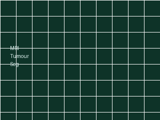
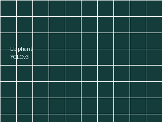

📚 Publications
11 peer-reviewed papers and abstracts. A live list is on Google Scholar and ORCID and , and the full list is available as BibTeX.
2021
-
ICIIS
Design of a Computed Torque Controller Based Joint Controller for PUMA 560 Manipulator [DOI][Abstract]
2021 IEEE 16th International Conference on Industrial and Information Systems (ICIIS), pp. 353–358
-
ICWTWC
A Vision-Based Early Warning System to Prevent Elephant-Train Collisions [Abstract]
International Conference on Wildlife Technologies and Wildlife Conservation (ICWTWC), London, UK, Open Science Index, Biological and Ecological Engineering, vol. 15, no. 8
-

A Systematic Approach for MRI Brain Tumor Localization and Segmentation Using Deep Learning and Active Contouring [DOI][Abstract]
Journal of Healthcare Engineering, vol. 2021, article ID 6695108, 13 pages
-
Journal
A Feasibility Study for Deep Learning Based Automated Brain Tumor Segmentation Using Magnetic Resonance Images [Abstract]
Journal of Research Technology and Engineering, vol. 2, no. 1, pp. 98–106, ISSN 2714-1837
-

A Convolutional Neural Network Based Early Warning System to Prevent Elephant-Train Collisions [DOI][Abstract][Video]
2021 IEEE 16th International Conference on Industrial and Information Systems (ICIIS), pp. 271–276
2020
-
IROS workshop
Elephant Train Collision Prevention System [Video]
Workshop on Humanitarian Robotics, IEEE/RSJ International Conference on Intelligent Robots and Systems (IROS), Las Vegas, USA, 9 November 2020
2019
-
SCSE
MRI Based Glioma Segmentation Using Deep Learning Algorithms [DOI][Abstract]
2019 International Research Conference on Smart Computing and Systems Engineering (SCSE), pp. 51–56
-
Journal
Distance Estimation and Material Classification of a Compliant Tactile Sensory Probe by Analyzing Vibration Modes and Support Vector Machine [Abstract]
Instrumentation Journal, vol. 6, no. 1, pp. 34–47
-
ASET
Brain Tumor Classification and Segmentation Using Faster R-CNN [DOI][Abstract]
2019 Advances in Science and Engineering Technology International Conferences (ASET), pp. 1–6
2018
-
IET PATW
Maximum Power Point Tracking Device [Abstract]
IET Present Around the World 2018: Annual Technical Conference, pp. 45–49, Moratuwa, Sri Lanka, ISBN 978-955-7479-01-9
-
METABOT: A Metal Tactile Robot Based on Active Sensing [Abstract]
6th IEEE Region 10 Humanitarian Technology Conference, Colombo, Sri Lanka, 6--8 December 2018